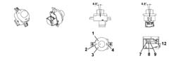

EXTERIOR MIRRORS CONTROL
- Path
- Descriptions > 55 ELECTRICAL EQUIPMENT > 5505 INSTRUMENT/GAUGE ELECTRICAL CIRCUITS > 5505A multi-function components > EXTERIOR MIRRORS CONTROL
- Kind
- system description
- Applies to
- all engines; all production periods
- Interactive page
- https://sloeber94.github.io/elrnDB-lThss/en/#/199150
Applies to: all engines; all production periods
COMPOSITION
The control for adjusting the exterior mirrors is located on the driver's door.

- 1 - Right mirror adjustment
- 2 - Neutral position
- 3 - Left mirror adjustment
- 4 - Folding position
There is a 12 way connector at the rear of the exterior mirrors adjustment control:
12 way connector:
Pin | FUNCTION |
|---|---|
1 | Not connected |
2 | Not connected |
3 | Not connected |
4 | Not connected |
5 | Not connected |
6 | Not connected |
7 | Analogue signal for mirror selection |
8 | + Dimmed lighting supply |
9 | - Earth |
10 | Not connected |
11 | Not connected |
12 | Analogue signal for mirror adjustment |
OPERATION
Both the exterior rear view mirrors can be adjusted using this device.
The controls consist of a joystick for the adjustments and a selector.
The mirror to be moved is chosen using the selector and the adjustment is made using the joystick.
The folding always applies to both mirrors, irrespective of the current position of the selector.